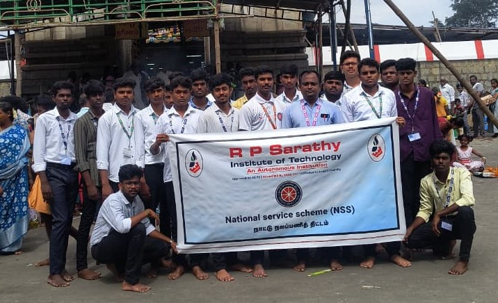
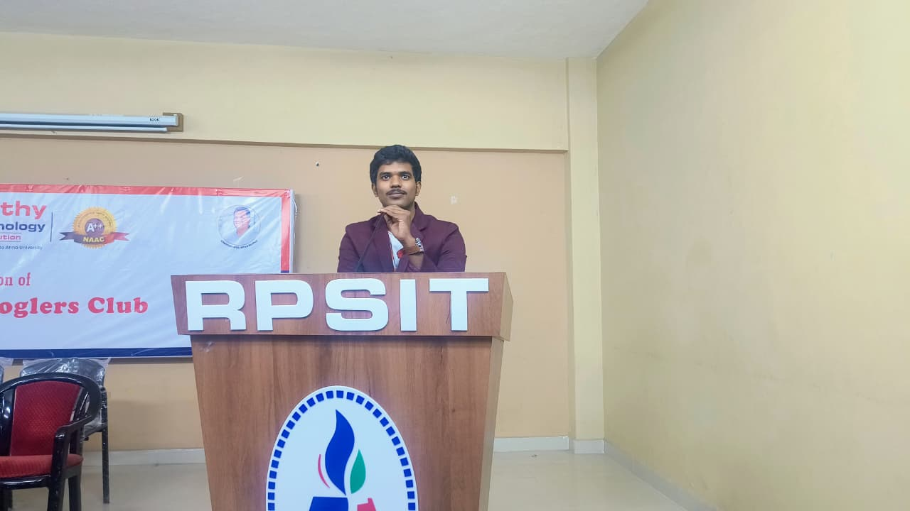
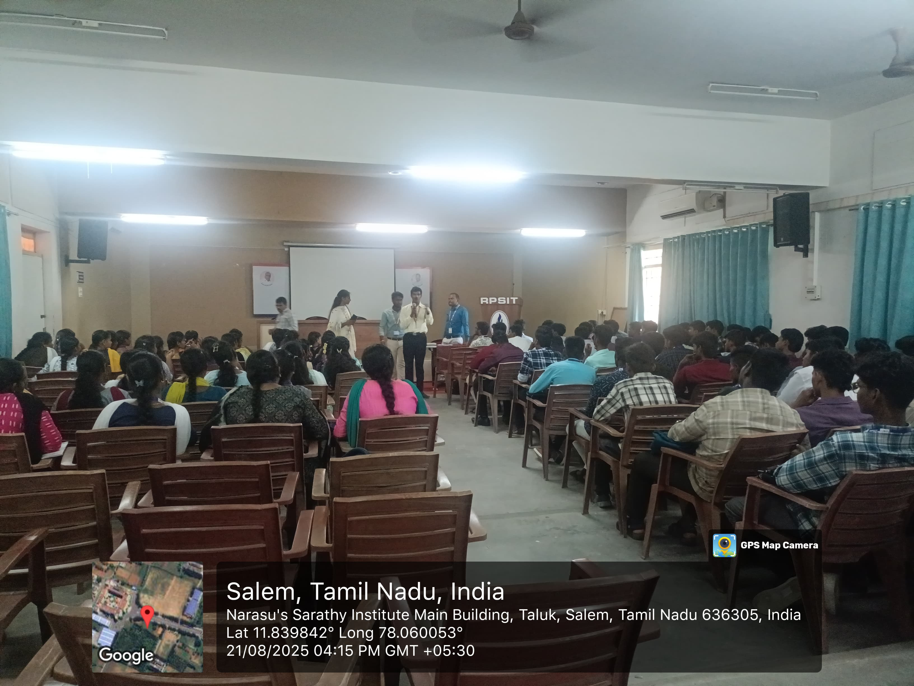

Volunteering & Activities
- Volunteer for ISRO Space on Wheels (Salem, 2024)
- Speaker in multiple college technical events
- Participant at StartupTN Global Summit
- Participant at TNJFU National Level Project Expo & Conference (Jan 2025)
Curricular Activities
- Completed Data Mining & Extraction internship at Misoftservices
- Completed Data Analytics internship at Misoftservices
- Completed UI/UX Design internship at Novitech
Co-Curricular Activities
- Speaker in multiple college technical events
- Participant at StartupTN Global Summit
- Participant at TNJFU National Level Project Expo & Conference (Jan 2025)
Extra-Curricular Activities
- Volunteer for ISRO Space on Wheels (Salem, 2024)
- Organized college-level hackathons and coding competitions
- Active member of the college robotics club
Leadership & Volunteering
- Science Club President & Youth Red Cross (YRC) Head — RPSIT
- Volunteered at Space on Wheels (ISRO), Salem — Sep 2024
- Speaker and mentor in multiple college events and seminars


Competitions & Participations
- StartupTN Global Summit — Participant
- TNJFU National Level Project Expo & Conference — Jan 2025
- Participated in multiple national & state-level workshops, hackathons, and innovation challenges
- Delivered talks and demonstrations on AI/ML projects and robotics prototypes
Achievements & Recognitions
- Completed Salesforce Data Cloud & AI Module
- Recognized for innovation in AI projects, robotics, and IoT prototyping
- Developed multiple mini-projects selected for national-level expos
- Awarded appreciation for volunteering and community service
My Contributions
Here are some of my activities and volunteering experiences. Click on each to learn more.

Volunteering

Leadership
